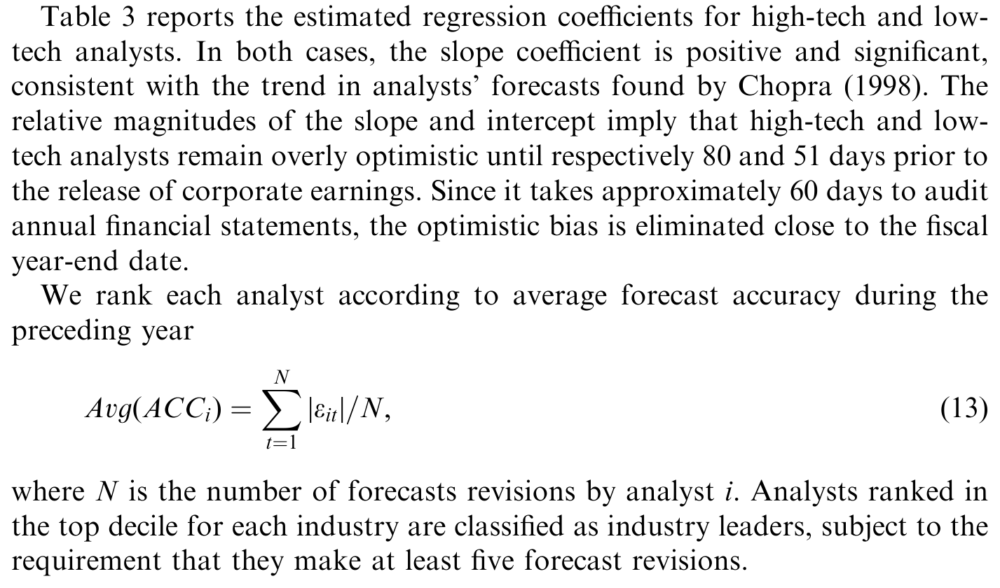
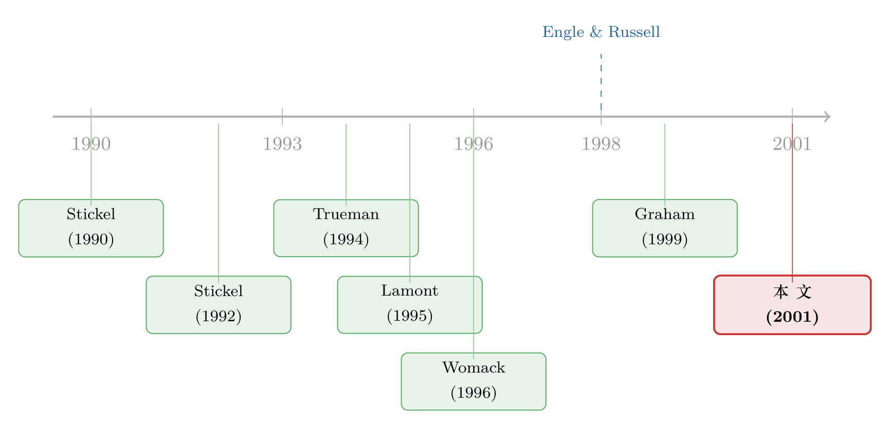

谁先开口，谁就是领头羊：给分析师排名的一把新尺子
本文读的是 Cooper, Day & Lewis (2001, Journal of Financial Economics)：与其靠问卷评选「华尔街最佳分析师」，不如看谁的盈利预测发布得最早、最能引来别人跟风。作者用一个「领头—跟随比率」(leader–follower ratio, LFR) 把分析师客观地分成「领头羊」与「跟风者」，并发现领头羊的预测修正对股价的冲击，确实显著大于跟风者；而且这把「及时性」的尺子，比「成交量」和「预测准确度」两把尺子都更能识别出真正有价值的分析师。
1 引言：怎样才算一个「好」分析师？
每年到了固定的时节，《机构投资者》(Institutional Investor) 杂志就会评出它的「全明星」(All-Star) 分析师名单。评选的办法很直接：去问那些大型资产管理机构的研究总监和首席投资官——你们觉得谁干得最好？这套办法有它无可替代的长处，毕竟「买方的钱包」最知道谁的研报值钱。
可问题也恰恰出在这里。一个分析师之所以上榜，可能是因为他真的本事大，也可能只是因为他在这行混得久、脸熟，或者干脆是他特别勤于游说客户给自己投票。换句话说，问卷评出来的，是「名气」，未必是「能力」。（关于这块金字招牌究竟值不值钱，可参见《"华尔街最佳分析师"的金字招牌，到底值不值钱？》。）
于是一个自然的问题浮出水面：有没有一种客观的、不靠投票的办法，能把分析师的高下分出来？
Cooper、Day 和 Lewis 这篇 2001 年的 JFE 论文，给出的答案出人意料地朴素：别去问人，去看谁是领头羊。 一个真正占优势的分析师（论文称之为 lead analyst，「领头分析师」），手里握着别人没有的信息或更强的分析能力，他会抢在所有人之前发布预测修正；而那些能力稍逊的「跟风分析师」(follower analyst)，则会等领头羊先开口，再搭个便车、跟着修正自己的预测。
把这套「谁先谁后」的次序量化出来，就成了一把丈量分析师能力的新尺子。
2 三种尺子：及时性、成交量、准确度
作者并不是只造了一把尺子。他先退后一步，问了一个更基本的问题：一个领头分析师的「优越」，到底会在哪些地方留下痕迹？
他给出了三处：
第一处是及时性 (timeliness)。 领头羊在收集和处理信息上有优势，所以能比同行更早发布盈利预测。而且这份「早」还会被放大——因为别的分析师会故意拖一拖，等着把领头羊产出的信息吸收进来。所以，一个分析师的预测相对别人有多「早」，可以代理他在生产盈利预测上那些看不见的优势。
第二处是成交量 (trading volume)。 券商的利润直接来自佣金，分析师的报酬有一部分就挂钩于他的研报带来的成交量。如果领头羊提供了价格里还没反映的信息，那么他的预测发布后，相关股票的异常成交量 (abnormal trading volume) 就应该上升。这把尺子有个好处：它绕开了及时性的一个软肋——评估新信息是要花时间的，所以领头羊未必每次都是「物理上」第一个发预测的人，但成交量能识别出那些预测有料、却不一定每次抢跑的分析师。
第三处是准确度 (accuracy)。 这把尺子最微妙。直觉上，好分析师当然预测得更准。但作者提醒：领头羊为了抢时间，往往愿意牺牲一点点准确度去换「第一个发声」的功劳；反过来，跟风者可以白嫖领头羊的信息来订正自己的预测。于是「准确度」这把尺子会被严重污染——领头羊和跟风者在事后准确度上的差距，可能小得出奇。
接着，一个自然的推论是：如果这三把尺子都有效，它们应该量出同一批领头羊。作者把这写成了一个可检验的假设——排名一致性假设 (Ranking Congruence Hypothesis)：及时性和成交量的排名应当正相关，而准确度的排名会和前两者几乎不相关。这是后文一个很关键的「自检」。
这一步设计很见功力：作者没有一上来就笃定「及时性最好」，而是先承认每把尺子都有自己的测量误差，再用它们彼此之间的相关性，反过来检验哪把尺子更可信。
3 识别策略：把「谁先开口」写成一个统计量
整篇论文最核心、也最漂亮的一步，是把「领头—跟随」这件模糊的事，变成一个能算、能做显著性检验的数字。这一节我们把它一步步推清楚。
第一步：给「跟风」一个分布。 作者假设，在领头羊发布一次预测修正之后，每个跟风者发布自己修正的等待时间，服从独立的指数分布 (exponential distribution)：
$$\frac{1}{\theta_1}\,e^{-t/\theta_1}$$
这里 \(\theta_1\) 是「领头羊开口后，下一个修正到来的期望等待时间」。对称地，在一个跟风者发布修正之后，其他人跟上的期望等待时间记为 \(\theta_0\)。
直觉很简单：真领头羊一开口，会迅速引来一串跟风修正，所以 \(\theta_1\) 很短；而一个跟风者开口，没人当回事，后续修正稀稀拉拉，所以 \(\theta_0\) 很长。 于是判别一个领头羊的核心，就是看 \(\theta_0\) 是不是显著大于 \(\theta_1\)。
（顺便一提，用指数分布给「事件到达时间」建模，正是 Engle 和 Russell (1998) 那个著名的自回归条件久期 (ACD) 模型的思路——本文把它从高频交易搬到了分析师的预测发布上。）
第二步：把等待时间累加起来。 对某个分析师的第 \(k\) 次预测，令 \(t^0_{ik}\) 和 \(t^1_{ik}\) 分别表示第 \(i\) 份其他人的预测领先或跟随这次预测的天数。把这个分析师全部 \(K\) 次预测、各取前后 \(N\) 份相邻预测累加，就得到累计领先时间 (cumulative lead-time) 与累计跟随时间 (cumulative follow-time)：
$$T_0 = \sum_{k=1}^{K}\sum_{i=1}^{N} t^0_{ik}, \qquad T_1 = \sum_{k=1}^{K}\sum_{i=1}^{N} t^1_{ik}$$
第三步：求期望等待时间的极大似然估计。 指数分布下，期望等待时间的 MLE 就是样本均值，于是
$$\hat{\theta}_0 = T_0/N, \qquad \hat{\theta}_1 = T_1/N$$
第四步：构造一个能做检验的统计量。 这是关键的一跃。由指数分布的性质，\(2T_0/\theta_0\) 与 \(2T_1/\theta_1\) 都服从自由度为 \(2KN\) 的卡方分布 \(\chi^2_{(2KN)}\)。两个卡方变量之比服从 F 分布，所以
$$\mathrm{LFR} = \frac{2T_0/\theta_0}{2T_1/\theta_1} \sim F_{(2KN,\,2KN)}$$
在「这个人既不领头也不跟风」(\(\theta_0 = \theta_1\)) 的原假设下，\(\theta\) 约掉了，统计量就退化成一个极其干净的形式：
这个 LFR 就是论文标题里的「领头—跟随比率」。一个系统性地抢在别人之前发布修正的领头羊，他的 LFR 会大于 1；一个总在别人之后才开口的跟风者，LFR 小于 1。
论文给的算例最能说明问题：某次领头羊修正之前，分析师 C、D 的预测累计领先了 $10+9=19$ 个分析师日；修正之后，分析师 X、Y 只用了 $1+2=3$ 个分析师日就跟了上来。于是这一次的 LFR $=(10+9)/(1+2)=6.33$——别人酝酿了很久他才开口，可他一开口别人立刻跟上，妥妥的领头羊。反过来，一个跟风者的算例里，LFR $=3/19$，远小于 1。
把分析师按行业累计计算 LFR、并只保留那些在该行业内至少发过 5 次预测的分析师（避免「一次幸运预测」污染排名），再把 LFR 在 10% 水平上显著大于 1 的人定为「及时性领头羊」，其余归为跟风者。注意：分类用的是前一年（估计期）的数据，检验用的是后一段（检验期）的数据——这一刀切开，正是为了避免「用收益本身去定义领头羊、再用领头羊去解释收益」的循环论证。
4 数据
样本聚焦两个产业：(1) 制造半导体和印刷电路板的高科技公司，(2) 餐饮业这类低科技公司。挑这两个产业是有讲究的——两者都竞争激烈、都需要不断创新，但高科技拼的是技术迭代，餐饮拼的是营销和消费潮流，分析师在两边都有「创造价值」的空间，又恰好代表了截然不同的信息环境。
- 预测数据：I/B/E/S，行业代码为半导体 (80802)、印刷电路板 (80801)、餐厅 (40303)；样本期 1993 年 1 月 1 日至 1995 年 3 月 31 日。起点选 1993 年，是因为这大致是 I/B/E/S 开始按日更新分析师预测的时点（此前是按周甚至按月）。
- 股价与成交量：Interactive Data Corporation 数据库。
- 样本规模：共 358 位分析师、为 156 家公司做了 6,947 份年度盈利预测。其中 201 位高科技分析师人均 14.5 份、每家公司 37.9 份；157 位低科技分析师「干得明显更卖力」，人均 25.7 份、每家公司 51.0 份。
- 关键过滤：分析师常常在季度财报公布后机械地调整年度预测，这类修正几乎不含新信息。作者把发生在季度财报公布日前后五天窗口内的修正全部剔除——这部分高达全样本的 25.6%。剔除后，最终样本为 5,137 份预测。
估计期定为 1993 全年，检验期为 1994 年 1 月至 1995 年 3 月——用前者分领头/跟风，用后者检验他们对股价的影响。
LFR 的分布本身也很说明问题：低科技样本的平均 LFR 为 1.17（标准差 0.83，偏度 4.16），高科技样本平均 1.25（标准差 1.76，偏度 6.77）。由于 LFR 下有零的边界，分布天然右偏——大多数人挤在 1 附近，少数领头羊拖出一条长尾。
5 主要结果：领头羊的话，股价真的更当真
有了领头羊和跟风者的名单，怎么检验他们「成色」不同？作者回到了及时性假设最直接的含义——相对信息含量假设 (Relative Information Content Hypothesis)：如果领头羊真的生产了更优越的预测，那么把超额股票收益对预测修正中意外（surprise）成分做回归，领头羊那条回归线的斜率——作者称之为预测反应系数 (forecast response coefficient, FRC)——应当显著大于跟风者的 FRC。
结果正如所料：按及时性排出的领头羊，其预测修正在发布期对股价的冲击，显著大于跟风者。 表 3 报告了高科技与低科技两个子样本里、领头羊与跟风者各自的 FRC 估计——领头羊一栏系统性地更大、也更显著，跟风者一栏则要弱得多。

Table 3: reports the estimated regression coefficients for high-tech and low-
更有意思的是三把尺子的横向比较。作者发现：按及时性排名比按成交量、按准确度排名都更有信息量。 准确度那把尺子尤其拉胯——这恰好印证了前面的担心：跟风者可以白嫖领头羊的信息来「刷」准确度，把这把尺子搅浑了。这也验证了排名一致性假设的预言：及时性与成交量的排名彼此呼应，准确度的排名却几乎和它们不相关。
最后还有一个耐人寻味的发现：分析师的预测修正，与近期的股价表现相关。换句话说，分析师并不全是「无中生有」地创造信息，他们也在用已经公开的信息（比如近期股价走势）来更新自己的预测。这一点对跟风者尤其成立——这正是信息创造假设 (Information Creation Hypothesis) 所刻画的：领头羊的预测意外独立于发布前的超额收益，而跟风者的预测意外，则与发布前的超额收益正相关。（关于「价格反过来教分析师做预测」这件事，可参见《价格会"教"分析师做预测吗？》。）
6 文献脉络
这篇论文站在两条线的交汇处。
一条线是分析师与股价。早在 Stickel (1992) 就发现盈利预测的信息含量与证券收益正相关，而且这种反应对「全明星」分析师比对普通分析师更强烈；Womack (1996) 则证明了新的买入/卖出评级之后，股票的后续收益与推荐方向一致，分析师的推荐确实创造了投资价值。这两篇奠定了「分析师的话会动价格」的实证基础。
另一条线是声誉与羊群。Trueman (1994) 用理论模型说明高质量分析师更敢于偏离市场共识；这与 Stickel (1990) 的发现一致——全明星们更少依赖共识预测。Lamont (1995) 进一步发现，偏离共识的幅度随预测者的年龄增加，因为有了履历的分析师不再需要靠「随大流」来保护自己。Graham (1999) 则在投资通讯里找到了声誉型羊群的直接证据：通讯们会在《价值线》发布择时建议后扎堆跟风。（关于机构层面的跟风，可参见《羊群是真的吗？——把"机构跟风"拆成跟自己和跟别人》。）

Cooper、Day 和 Lewis (2001) 的贡献，正是把这两条线拧成一股：他们意识到，羊群效应不只是一个需要被解释的现象，它本身就可以反过来当成一把识别领头羊的工具——既然跟风者会在领头羊开口后迅速扎堆，那么「谁引来了扎堆」就暴露了谁是领头羊。这是一个把「问题」变「方法」的漂亮反转。
评论与延伸（Q&A + 研究方向）
(a) 几个可能的疑问
Q：LFR 不就是在度量「谁手快」吗？跟「谁聪明」有什么关系？
关键不在「快」，而在「快之后有没有人跟」。LFR 的分母是累计跟随时间——只有当一个人开口后别人迅速跟上（分母小），他才会被判为领头羊。一个手快但没人理睬的分析师，分母很大，LFR 照样小于 1。所以 LFR 度量的是「引发跟风的能力」，而这恰恰是信息优越性的外在表现。
Q：用「前一年分类、后一段检验」就能洗清循环论证吗？
能洗掉最直接的一种：避免「用收益定义领头羊、再用领头羊解释收益」。但它洗不掉「能力持续性」这个隐含前提——如果一个人去年是领头羊、今年却不是，错配就会稀释结果，让 FRC 差距被低估。所以这套设计是保守的：它更可能漏报（把真领头羊算成跟风者），而不是虚报。
Q：为什么准确度反而是最差的一把尺子？这不反直觉吗？
因为准确度被「白嫖」污染了。跟风者等领头羊先发预测，再把这份信息吸进自己的预测里，于是事后看，跟风者的准确度可以做得不比领头羊差。准确度衡量的是「最终答案对不对」，却抹掉了「谁先算出答案」这个真正稀缺的本事。 领头羊甚至会主动牺牲一点准确度去换时间。
Q：剔除掉季度财报前后五天的 25.6% 修正，会不会把真信息也一起扔了？
有这个风险，但方向是「宁可错杀」。这些修正大多是分析师对季度盈利意外的机械调整，信息含量低，留着反而会给 LFR 引入噪声。作者用 Fig.1 展示了这些修正如何在财报日附近扎堆，剔除是为了让「领头—跟随」的次序不被财报日的集体调整带偏。
Q：成交量这把尺子，到底比及时性差在哪？
成交量的软肋是「归因不清」：异常成交量可能来自全市场新闻或某个重大公司公告，未必是这位分析师的功劳。及时性虽然也有「领头羊未必每次抢跑」的问题，但它直接锚定在「谁引发了跟风」这个更干净的次序上。论文的结论是及时性整体更有信息量，但成交量仍是一个有用的稳健性交叉验证。
Q：只看半导体和餐饮两个行业，结论能外推吗？
这是个真问题。两个行业是刻意挑的「信息环境对照组」（技术驱动 vs. 消费驱动），好处是干净，代价是外部有效性存疑。比如在分析师覆盖极度拥挤、或信息极度稀薄的行业，LFR 的分布形态可能完全不同，10% 显著性这条线划出的领头羊比例也会变。
(b) 几个可能的研究问题与提案
1. 把 LFR 搬到公司债分析师/评级机构上
【经济故事】信用市场里同样有「谁先动评级、谁引发跟风」的次序。如果某家评级机构或卖方信用分析师系统性地领先，其评级变动对债券利差的冲击应当更大。这等于把本文的「领头—跟随」逻辑从股票预测搬到信用观点上。
【可行性】中。数据可用（评级变动有明确时间戳，债券利差可由 TRACE 构造），LFR 的构造几乎可以照搬。难点在于评级变动远比盈利预测稀疏，\(K\) 和 \(N\) 都偏小，统计功效会下降。
2. 外资分析师是领头羊还是跟风者？
【经济故事】外资机构常被认为有信息劣势（「本地知识不足」），但也可能因全球视野而更早识别拐点。用 LFR 给本土 vs. 外资分析师分别排名，能直接检验「外资到底是引领还是跟随本地共识」。
【可行性】中。需要 I/B/E/S 配合分析师所属券商的国别信息，后者不易获取且需手工匹配。识别上要小心：外资覆盖的本来就是大盘、流动性好的股票，需用公司固定效应剥离这层选择。
3. 领头羊的「领先」能不能交易？
【经济故事】本文检验了「零交易利润假设 (Zero Trading Profits Hypothesis)」——如果价格快速吸收信息，发布后就不该有超额收益。但若市场反应迟缓，跟着领头羊（而非跟风者）的修正下单，理论上能赚钱。这把「识别领头羊」直接接到了一个可执行策略上。
【可行性】高。LFR 排名 + 事件研究的框架现成，数据齐全。诚实地说，难点在交易成本和时滞：领头羊的优势往往以「天」计，扣掉冲击成本后是否还剩超额收益，需要严格的净化检验。（这条暗线与《报告还没发，他们已经先买了五天》 里的"通风报信"机制可以对照着看。）
4. 流动性视角下的「跟风成本」
【经济故事】跟风者扎堆修正时，会不会因为大家挤在同一时点交易而推高价格冲击、恶化流动性？把 LFR 与个股的流动性指标（Amihud、价差）挂钩，可以看「羊群」本身如何在微观层面消耗流动性。
【可行性】中。需要日内成交量/价差数据与预测修正时间戳对齐。识别难点在于因果方向——是跟风导致流动性恶化，还是流动性差的股票本来就吸引跟风。
我的判断
这篇论文最大的贡献，是把一个看似主观的问题（谁是好分析师）变成了一个可计算、可检验、不依赖任何人投票的统计量，而且这个统计量的构造逻辑——「用羊群效应反推领头羊」——既符合声誉型羊群的理论，又自带一个干净的极大似然检验框架。在 2001 年，这是相当有想象力的一步。
对识别，我有两点保留。其一是能力持续性的隐含假设：用前一年定义领头羊、用后一段检验，只有在「领头羊地位足够稳定」时才有效；地位若快速漂移，结果会被系统性低估，作者的结论因此偏保守（这是好事，但也意味着真实效应量级难以钉死）。其二是外部有效性：两个行业、两年多的窗口、按日更新刚起步的 I/B/E/S 数据，都让人想知道这把尺子在更宽的样本里是否稳健。
我接下来最想看到的，是把 LFR 接到净化后的可交易策略上——领头羊的「领先」究竟是几个基点的纸面优势，还是扣掉冲击成本后真能落袋的超额收益？以及，在今天 Reg FD 之后、信息扩散远比 1990 年代更快的环境里，「领头—跟随」的时间差是否已经被压缩到了无法交易的尺度。这把二十多年前的尺子，值得用今天的高频数据重新量一遍。
参考文献
- Engle, R.F., Russell, J.R. (1998). Autoregressive conditional duration: a new model for irregularly spaced transaction data. Econometrica 66, 1127–1162.
- Graham, J.R. (1999). Herding among investment newsletters: theory and evidence. The Journal of Finance 54, 237–268.
- Lamont, O. (1995). Macroeconomic forecasts and microeconomic forecasters. Unpublished working paper, Cambridge, MA.
- Stickel, S.E. (1990). Predicting individual analyst earnings forecasts. Journal of Accounting Research 28, 409–417.
- Stickel, S.E. (1992). Reputation and performance among security analysts. Journal of Finance 47, 1811–1836.
- Trueman, B. (1994). Analyst forecasts and herding behavior. Review of Financial Studies 7, 97–124.
- Womack, K.L. (1996). Do brokerage analysts' recommendations have investment value? Journal of Finance 51, 137–167.
- Cooper, R.A., Day, T.E., Lewis, C.M. (2001). Following the leader: a study of individual analysts' earnings forecasts. Journal of Financial Economics 61(3), 383–416.